7210A30 R.R. FRONT WING MOUNTING BRACKET
- Path
- Procedures > 72 PANELS AND FRAME > 7210 REMOVING REFITTING > 7210A STRUCTURAL ELEMENTS (FRONT PART) > 7210A30 R.R. FRONT WING MOUNTING BRACKET
- Kind
- repair procedure (removal / refitting; the operation number is the code)
- Applies to
- all engines; all production periods
- Interactive page
- https://sloeber94.github.io/elrnDB-fMltpl/en/#/2892304
Applies to: all engines; production: fino a 05/99, da 09/03, da 06/99 a 03/02, da 04/02 a 08/03, fino a 05/04
 Removing
Removing
 Refitting
RefittingMove all fouling parts.
Check if any of the connected parts are deformed by checking body alignment dimensions. Use appropriate measurement tools (reference rigs, templates or gauges).
If necessary, straighten the body before cutting the part.
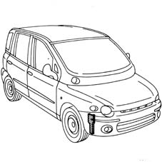
Applies to: all engines; production: fino a 05/99, da 09/03, da 06/99 a 03/02, da 04/02 a 08/03, fino a 05/04
Use a rotary brush to remove paint and expose the spot welds.
1. Use a chamfering machine to remove the spot welds shown in the figure.
2. Remove the side bracket from the car.
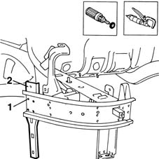
Applies to: all engines; production: fino a 05/99, da 09/03, da 06/99 a 03/02, da 04/02 a 08/03, fino a 05/04
Refitting
RemovingUse a grinding wheel to clean the weld residues.
Straighten the edges of the side bracket seating using a hammer and profiled stake.
Use a rotary brush to clean treated areas.
1. Apply the electroweldable paint finish to the areas shown in the figure.
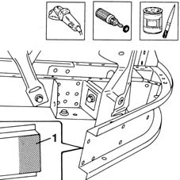
Applies to: all engines; production: fino a 05/99, da 09/03, da 06/99 a 03/02, da 04/02 a 08/03, fino a 05/04
Remove the anti-corrosion treatment from the part using a rotary brush.
1. Apply electroweldable paint in the area in contact with the car.
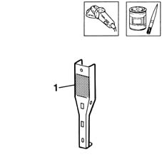
Applies to: all engines; production: fino a 05/99, da 09/03, da 06/99 a 03/02, da 04/02 a 08/03, fino a 05/04
1. Fit the part in its seating and secure using self-locking grippers.
2. Use a spot welder to weld the part in the points indicated in the figure.
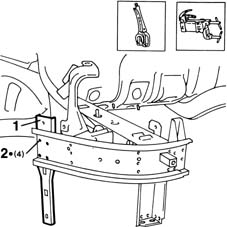
Applies to: all engines; production: fino a 05/99, da 09/03, da 06/99 a 03/02, da 04/02 a 08/03, fino a 05/04
1. Fit the front wing (1a) and front bumper (1b) and close the bonnet (1c).
Check alignment and gaps around the edges.
Remove the bumper and wing.
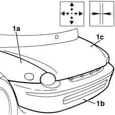
Applies to: all engines; production: fino a 05/99, da 09/03, da 06/99 a 03/02, da 04/02 a 08/03, fino a 05/04
1. Use a rotary brush to dress the spot welds.
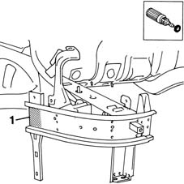
Applies to: all engines; production: fino a 05/99, da 09/03, da 06/99 a 03/02, da 04/02 a 08/03, fino a 05/04
1. Apply anti-corrosion paint on the newly-welded areas.
2. Apply sealant on the edges of the part in contact with the car.
Apply paint.
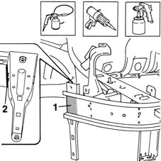
Applies to: all engines; production: fino a 05/99, da 09/03, da 06/99 a 03/02, da 04/02 a 08/03, fino a 05/04
Refit all fouling parts.
Applies to: all engines; production: da 06/04
Removing
Refitting- Place the bonnet in an open position.
- Check that the components connected are not distorted by checking the bodyshell alignment measurements using suitable equipment (gauges, templates or jigs).
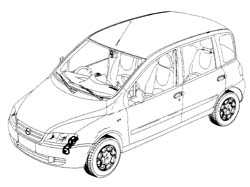
Applies to: all engines; production: da 06/04
- Undo the bolts fixing the bracket to the bodyshell.
- Remove the bracket.
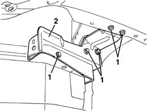
Applies to: all engines; production: da 06/04
Refitting
Removing- Position the replacement part correctly on the vehicle.
- Screw in the bolts fixing the bracket to the bodyshell without tightening them.
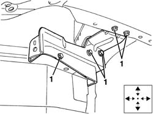
Applies to: all engines; production: da 06/04
- Place the bonnet in a closed position and place the front light cluster in position.
- Check/adjust the alignment and surrounding gaps until perfect, then tighten the fixing bolts.
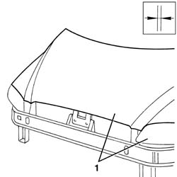
Applies to: all engines; production: da 06/04
- Paint the bracket following the recommended cycle.